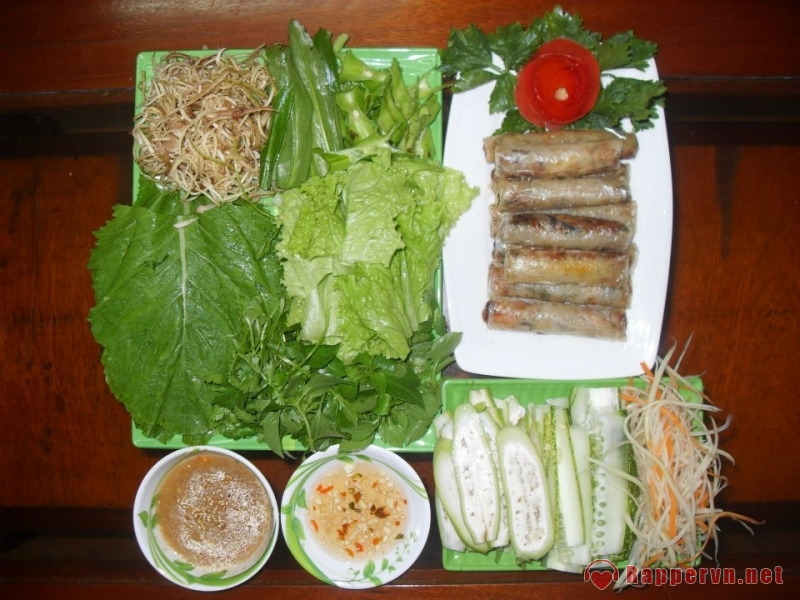
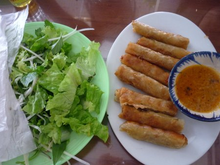

-
Ram cuốn cải
Ram cuốn cải, một trong những món ăn vặt được chuộng nhất ở ĐN vào mùa này. Nhân ram là một ít miến trộn với thịt và nấm mèo, chiên nóng rồi dọn thêm một ít nộm đu đủ, cà rốt và dưa cùng với một đĩa bánh tráng. Và dĩ nhiên là không thể thiếu rau sống và cải. Thêm 1 chén nước chấm hơi ngọt và cay, từng chiếc ram cuốn dài tầm một ngón tay với lớp vỏ bánh tráng bò bía thơm, giòn. Cắn một miếng, mùi thơm ngọt của khoai tây, cà rốt, khoai lang, vị cay cay nồng nồng của cải, như giòn tan nơi đầu lưỡi.
Ram cuốn cải, một cái tên nghe không mấy xa lạ đối với người dân và khách du lịch Đà Nẵng, nhưng ram cuốn cải chay vẫn là món ăn khá thú vị và lạ miệng đối với nhiều người. Món ăn này khá hấp dẫn, phù hợp vào những buổi chiều trời mưa, vị thơm của ram và hương cay nhẹ của cải cứ làm cho người ta xuýt xoa khen ngon.
Cách làm khá đơn giản, trải bánh tráng bò bía ra, cho một ít nhân đã làm ở trên vào, cuộn lần lượt thành từng chiếc ram rồi đem chiên. Cho lượng dầu phải vừa ngập cuốn ram, đun sôi dầu rồi cho các cuốn ram vào, canh lửa vừa phải, đợi vàng đều là vớt ra đĩa.
Để ram được giòn lâu, nên vắt một chút chanh vào trong dầu chiên và sau khi chiên thì gắp ra cái đĩa có sẵn giấy thấm dầu.
Nước chấm được chế biến từ nước tương chay bán sẵn, chỉ cần thêm tương ớt, cho gia vị vừa miệng và thêm dầu ăn nóng đổ vào là ổn. Ram cuốn cải chay thường được ăn kèm với cải cay, rau xà lách, rau thơm các loại.
Mùa hè miền Trung với những cơn mưa rào bất chợt, ngồi trong bếp cùng người thân thưởng thức những chiếc ram nóng hổi vừa thổi vừa ăn...thì còn gì bằng!
